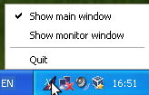
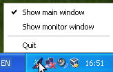

|
 |
MAVA Logger X is an application that monitors the execution of a Malév Virtual flight, and collects data that can be sent to the MAVA website for further evaluation. This manual describes how to use this program. To be able to use all features of the program, you need to have a working Internet connection, even if you don't fly on-line on VATSIM or IVAO. However, it is possible to perform a flight completely offline as well.
While monitoring your flight, the program continuously checks if your airplane's configuration is always within the parameters prescribed by the airline's operating procedures. For example, you have to turn on or off the various lights of your aircraft according to rules, you cannot exceed certain weight or speed limits, and so on. Any deviation from the expected parameters, also known as a fault, can result in points subtracted from the initial 100 points (or percentage). The result is your flight rating. Some deviations are so serious, that they are deemed NO GO faults and result in the rejection of your flight.
Besides the faults the program also monitors many other parameters, which are recorded in a textual log. This log is sent as a part of your PIREP (PIlot's REPort), and will be analyzed, and possibly commented on by more experienced pilots of Malév Virtual. This way you can perfect the way you execute your flights.
The application breaks up your flight into several stages. The advancement from one stage to another is detected automatically. These stages and the conditions under which they are entered are as follows:
To enhance the simulation, the program can play various sound files during the various stages of your flight, such as the announcements made by the flight attendants. These files are supplied with the application, and they can be played automatically, or when you press a certain hotkey in the flight simulator. You can also organize pre-recorded sound files into checklists for the each aircraft type, and these files can also be played back one-by-one when you repeatedly press a key combination in the simulator. See below for more information on this.
Malév Virtual have implemented an Online ACARS System, which displays the status of the flights in progress. The data appears on the front page of the MAVA website and also on a map.
Malév Virtual have also implemented an Online Gate System which maintains a database of the aircraft in the airline's fleet and their location. An aircraft may be parked at the Budapest Ferihegy Airport, in which case the number of the gate or stand it is located at is recorded in the database. If so, this number is displayed to you when starting your flight from Ferihegy, and you are recommended to place your aircraft at the indicated gate or stand in the simulator. If your flight begins at Ferihegy and the aircraft is away (usually due to someone else's flight), you can select from which gate or stand you start your flight. The database of the Online Gate System can also be displayed by using the application.
These online systems can only be used when flying online.
The program can automatically update itself. When it starts up, it checks if there is a newer version available. If so, it downloads its files and replaces the program's current files with the new ones. Then the program is restarted so that you can use the new version. Besides acquiring bug fixes, updating is also important, because the program can be extended with new checks or more refined checks, and if you are using too old a version, the PIREP reviewers may refuse your flight.
The GUI of the application is made up of traditional building blocks (buttons, checkboxes, lists, text entry boxes, etc.) found in other applications as well. Many such controls have informative tooltips that supplement the contents of this User's Guide in helping you using the application. Many controls are also accessible by pressing the Alt plus the underlined letter in the control's label.
The most often used part of the program is the main window, to be described in detail below. When you minimize or close the window, it disappears by default, but the program continues to run. You can redisplay the window by clicking on the tray icon of the program, which looks like the one on the picture below.
|
|
 |
If you click on the tray icon when the program's window is hidden, the window will be displayed. If you hover the mouse pointer over the icon, the flight stage and the current rating will be displayed. The tray icon has a right-button menu as well with the following items:
You can also quit the application by selecting the File/Quit menu item, or by pressing Ctrl+Q.
If you start the application, when it is already running, the main window of the already running instance will be displayed instead of starting a new instance of the program.
The figure below depicts the main window of the application. The top of it contains the usual menu bar, which will be described in more detail later. The content area consists of several tabs the use of which is described below.
The bottom of the window is a status bar. Its left side contains the icon indicating the status of the connection to the simulator. Since the application continuously monitors the parameters of your aircraft, it needs to communicate with the simulator. The icon's colour indicates the health of this communication channel.
If it is grey, the program is not connected. This is normal before and after the flight. If it is green, the connection is alive and working properly. If it is red, the connection is broken. In this case a dialog window is displayed. The most likely cause for such a disruption is the crash of the simulator. If this is the case, restart the simulator and try to restore the flight to a state as close to the one before the crash as possible. Then click the Reconnect button, and the program will try to re-establish the connection to the simulator. It preserves all data of your flight, so you can continue where you left off easily.
If the reason for the failure of the connection is something else, do whatever is needed to be done to restore it. Of course, it is possible that the logger application itself fails, in which case you, unfortunately, have to restart the flight. Do not forget to notify the author if this happens. In this case, try to copy and save the debug log and send it with your bug report.
If you click the Cancel button in the reconnection dialog, the logger will be reset as if it were stopped and restarted.
To the right of the connection status icon, you can see the current stage of the flight, if the monitoring has begun. Otherwise it is a single dash. It is followed by the simulator time, if the program is already connected to the simulator. Then comes the current flight rating.
The right of the status bar is normally empty, but if there is some potentially long operation going on (typically communicating with the MAVA servers), information about the operation is displayed here. This is accompanied by the cursor becoming that of signaling a busy state and most parts of the main window becoming unresponsive.
The flight tab is the most important tab. It consists of a sequence of pages similar to wizards found in many programs. The first several of these pages guide you through the various steps of the preparations for your flight, while the last pages allow you to enter some information about your flight necessary for its evaluation and to send the PIREP (Pilot's Report) assembled by the program to the MAVA server.
Each page has a title at the top indicating the purpose of the page. There is a short text below this, which describes what the page contains and/or what is expected from you to do with the page. Below the text you can find the main information and possibly data entry areas for the page. Finally, you can find the button row at the bottom.
Most of the pages contain two buttons: Next and Previous. These help in navigating between the pages. In most cases you can go back to previously visited pages by using the Previous button, although you cannot edit the contents of some of the pages once finalized by moving to the next page using the Next button. There are a few exceptions though, as detailed below.
Many of the pages also contain a Cancel flight button. Clicking this button will allow you to cancel the flight and go back to the flight selection if you have logged in to the MAVA server, or to the login page, after a confirmation of your intent.
The program starts with the Login page (see the
picture above) where you can enter the
your pilot's ID and password for the MAVA website. Both data are
given to you when joining Malév Virtual. The pilot's ID usually
starts with the letter P
followed by three digits.
If you check Remember password, the password will be saved by the program, so you don't have to enter it all the time. Note, however, that the password is saved in a readable form into a configuration file, so use this possibility only if your home directory can be accessed only by people you trust. The pilot's ID is saved anyway.
If you are about to perform the entrance flight, check Entrance exam. In this case you don't have to (and cannot) enter the password, as that is not needed for the entrance exam.
The login to the MAVA server, and proceed to the next page, press the Login button.
If you would like to fly without an Internet connection, use the Fly offline button. This immediately takes you to the next page, without trying to log in to the MAVA server.
This page displays the list of the flight you have booked previously on the MAVA website, if you have logged in properly. If you chose to fly offline, the list is empty.
If you have selected a flight, you can also save it by using the Save flight button. This is useful when planning to fly offline at some later time. When preparing for that flight, you can properly log in to the MAVA server, and acquire the list of your booked flights. Then you can save the flight you wish to perform later offline, on which occasion, you can load the saved flight.
You may need to refresh the list of flights. For example, you notice that you have forgotten to book the flight you want to perform. Then you can book the flight on the MAVA website, and press the Refresh flights button to update the list.
You can also load a flight from a file by pressing the Load
flight from file button. This displays a file selection dialog
where you select the flight file (usually with a suffix
of .vaflight). This is mostly useful when flying
offline, or during the entrance exam.
Select a flight from the list, and press the Next button to proceed with that flight.
This page is displayed after the flight selection page only if your flight starts at the Budapest Ferihegy Airport and the number of the gate or stand at which your aircraft is located cannot be determined.
Select a number from the list presented, and press Next.
This page displays some important information about your flight, such as the type and tail number of the aircraft to use, the departure airport and possibly the gate.
Select the aircraft indicated and park it at the departure airport in the simulator, then press Connect to establish the connection with the simulator. If the connection cannot be established, a dialog will be displayed about it, and you can Try again the connection or Cancel to go back to the flight selection or to the login page.
Note, that after a successful connection, the monitoring of your flight does not begin immediately, but some data can be queried by the logger at this stage.
This page displays the components of the flight's payload and the calculated Zero-Fuel Weight (ZFW). You can modify all input data, but generally it is needed to enter the cargo weight you determined for the flight, if it is different from 0. You can also press the ZFW from FS button, which queries the ZFW from the simulator and displays the retrieved value. If the ZFW calculated from the payload data differs too much from the queried one, the calculated value is displayed in red. This the right time to set up the payload in the simulator. If you forget about it, it will be a NO GO fault.
If you have finished with this page, press the Next button. At this point, the Help tab becomes available, which you can use if you have failed to set up the correct payload in the simulator. See a more detailed description of it below.
This page displays the departure and arrival times of your flight in UTC. Press the Time from FS button to query the current UTC time of the simulator. To be able to simulate the real lighting circumstances of the flight, the simulator's time should match the time of the flight according to the schedule. Therefore you are expected to set the simulator's time properly. It is recommended to set it to about 15 minutes before the departure at this stage so that you have enough time to set up your flight.
When you have set the time of the simulator properly, press the Next button.
This page contains a graphical representation of the fuel tanks of your aircraft. The yellowish colour represents the current level of the fuel in the tank, and turquoise slider is the expected level, which is also displayed numerically (in kilograms) below each graph.
You can enter the requested amount of fuel numerically, or you can set it by the turquoise sliders, though this method is less accurate. The lever can be moved by clicking withinin the fuel tank's representation, and you can drag it if you keep the button pressed. If your mouse has a wheel, that can also be used to modify the expected level. To use the wheel, keep the mouse pointer within the fuel tank's graphic. Each click of the wheel increment or decrements the amount by 10 kilograms. If you hold down the Shift key, the increment will be 100, if you hold down the Ctrl key, the increment will be 1.
When all tanks have the correct amount of fuel set, press the Next button. This causes the pumping of the fuel to start. The progress is represented by the yellowish fuel bars growing or shrinking (fuel may be pumped out of a tank as well). This is a relatively quick process and should finish within a few seconds.
This page displays the cruise level and the flight plan route. The cruise level starts out at FL240, but the route comes from the booked flight. Set the cruise level to the one you have calculated with, and modify the flight plan if needed. For example, if you will enter some airspace that will require you to change the flight level, you should add that here.
When satisfied with the information on the page, press the Next button to advance. Note, that these data can be edited later as well if you come back to this page.
These pages display the NOTAMs and the METAR for the departure and the arrival airports. You can edit the METAR if your network provides a different weather, or you do not fly with real weather. The METAR of the arrival airport will be updated when entering the landing stage, unless you have edited it before. The METARs can be edited during the whole duration of the flight. If you do so, please, comment on it in the Comments section of the Flight info tab.
On the second briefing page (that of the arrival airport), confirm that you have read the briefing and are ready to start the flight by clicking the button. This begins the monitoring of your flight with the boarding stage.
On this page you have to enter the name of the departure runway, the name of the Standard Instrument Departure procedure you follow after takeoff and the takeoff V-speeds. While you can edit these data anytime, it is recommended to do so before takeoff.
Note that if you are flying one of the Tupolev or Yak aircraft, the page will look different, as speeds will have to be entered in kilometres per hour.
For most aircraft in the fleet you should also enter the takeoff derate setting. Its exact format and value depends on the type.
You can also select here whether you have turned on any anti-ice systems (apart from the pitot heat). However, for most aircraft, the logger can detect the setting, and if anti-icing is turned on, the check box will be checked automatically. If you have checked it yourself, it will not be unchecked by the program (unless it gains self-awareness sometime in the future).
You can proceed to the next page after takeoff, and if all data has been entered, by pressing the Next button.
This page displays your cruise altitude as set on the Route page. If you need to modify your cruise level due to airspace requirements, step climb or any other justified reason, you can set the new level here and then press the Update button when you have reached the specified level.
If you are preparing for landing, you can press the Next button to go to the next page.
On this page you have to enter the name of the STAR and/or
transition you planned to follow (even if you get a different one,
or simply vectors from ATC, in which case add a
comment about it),
the approach type (e.g. ILS
, VOR
, VISUAL
,
etc.), the name of the landing runway, and the landing reference speed,
Vref. You can enter this data during the flight, or after
you have landed, at your discretion. Note, that if you fly one of
the Tupolev or Yak aircraft, the speed will have to be entered in km/h.
This page also contains a checkbox for the anti-ice system, which is handled the same way as the one on the Takeoff page.
When you have entered all data, press the Next button. It is active only, if the flight has ended.
This is the final page of the flight wizard. It contains a summary of your flight: the rating, the flight and block times, the distance flown and the amount of fuel burnt.
You also have to provide a few pieces of information. You have to select the type of the flight from the list provided (scheduled, old-timer, VIP, charter) and whether it was an online flight or not. If you arrive at the Budapest Ferihegy Airport, and are using the Online Gate System, you also need to specify the number of the gate or stand you have parked you aircraft at.
If all necessary data has been entered, and the program is so configured, it will automatically save the PIREP.
With all data entered, you may want it review your flight (i.e. the earlier pages or some of the other tabs), then save or send the PIREP created from it. These can be accomplished by pressing one of the buttons at the bottom. A saved PIREP can be loaded later and sent, if the sending fails for some reason. When a PIREP is sent, it becomes available for review by the designated PIREP reviewers of Malév Virtual.
You can also start a new flight using the New flight button. If you have not saved or sent the PIREP, you will be asked to confirm your intention. When starting a new flight you are taken to the flight selection page, if you have logged in to the MAVA server, or to the login page, if your flight has been an offline flight.
This tab allows one to enter some additional information about the flight, if necessary.
The Comments text area should contain any general information that you would like the PIREP reviewer to know about. For example, why you changed the METAR, why you lowered the gears accidentally (i.e. pressed the wrong key on the keyboard), etc.
The Flight defects text area should contain information about any problems you encountered with the plane during the flight. For example an engine stopped and why (if known), that flaps could not be extended or retracted, etc.
In the Delay codes area you can mark one or more reasons why the flight was delayed, if it was. The options are self-explanatory.
This tab provides some help for calculating and setting the payload weight of the aircraft. It can be used once the Payload (i.e. the cargo weight) is finalized. To use this tab, check the Using help checkbox. It causes the page to become sensitive and filled with data. Note, that the fact of using the help is logged, so the PIREP reviewers will know about it.
The most important information is after the Payload: label, which is the payload weight of the aircraft. This value should be set in the simulator as the airplane's payload weight. By pressing the Simulator data button, the data coming from the simulator can be queried and displayed. If the data is out of the tolerances, it is displayed in red, otherwise in green.
The gross weight is also displayed with some maximum weights of the aircraft, so it can be checked or estimated if you will remain within those maximums during the flight.
This is the main log of your flight that will be analyzed by the PIREP reviewers. Its contents is generated automatically by the program, and most lines are prefixed by the simulator times the information in the given line belongs to.
While the log's contents is mainly useful for PIREP reviewers, it can come handy when things start to happen very fast, and you have no time check each fault message passing by (if you have enabled such messages at all). Later, when things calm down, you can check the log to see what happened exactly, so that you know why so many fault points have been awarded. For example, you may even decide to abort the flight, if you think some of the faults are too embarrassing :) For quick identification, the lines containing the fault messages are highlighted.
This tab displays information retrieved from the MAVA Online Gate System. If the program needs to retrieve data, this tab's contents are refreshed automatically, but you can also refresh them manually anytime using the Refresh data button.
The left side of the tab contains the fleet information. The tail number of each aircraft is listed with the plane's status, as known by the Online Gate System. The two major statuses are LHBP-nn and AWAY. The former indicates that the aircraft is parked at the Budapest Ferihegy Airport at gate or stand nn, while the latter one denotes that the airplane is parked at another airport. Another possible status is PARKED, which means that the airplane is parked somewhere at the Ferihegy Airport, but we (or at least the Gate System) don't know where. It may happen that several aircraft are parked at the same gate or stand at Ferihegy. In this case the tail numbers and the statuses of those airplanes are displayed in red.
The right side contains the list of the numbers of the gates and parking positions. A number is black if no aircraft is positioned at the corresponding gate or stand, and it is orange, if the location is occupied.
This tab is not visible by default, but can be displayed by selecting View/Show debug log or by pressing Ctrl+D. It is another kind of log, which is mainly useful for debugging. If you experience some problem with the program, please, include the contents of this log with your bug report. It can help a lot with finding a solution to the problem.
Saved PIREPs can be loaded and sent by the program. This can become necessary, for example, if you cannot send a PIREP due to some network problem right after your flight, or when you deliberately performed a flight without connecting to the Internet.
To load a PIREP select the File/Load PIREP... menu option or press the Ctrl+L key. A file selection dialog appears, from which you can select the PIREP to load. If you select a valid PIREP file, it will be loaded and a new window will be displayed with the most important data of your flight. By clicking Send PIREP..., the PIREP will be sent (or at least an attempt will be made at sending it). A dialog window will be displayed about the results of the attempt.
You may also want to view a saved PIREP, for example, if it is a PIREP about an entrance exam flight. To do so, click the View PIREP... button. This displays the PIREP viewer window, which groups the data into three tabs. The Data tab contains the itemized data of the flight. The Comments & defects tab displays the comments and or flight defects entered by the user. The Log tab contains the flight log.
The checklists are lists of audio files. When checklist playback is enabled (see the description of the Preferences window below), and there is a checklist for the type of the aircraft used for the flight, the files constituting the checklist can be played one-by-one by pressing the checklist hotkey repeatedly.
The checklist editor window allows for editing the checklists. It can be displayed by selecting Tools/Checklist Editor... or pressing Ctrl+C. The top of the window contains an aircraft type selector.
The files making up the checklist for the currently selected aircraft are displayed on the right. You can move a file up or down by dragging it with the mouse. You can also select one or more files from the list. Then you can remove them with the Remove button, or move them up or down by pressing Move up and Move down.
To add new files to the checklist, select them in the file selector on the left, and press Add to checklist. The file(s) will be appended to the end of the checklist.
Note, that any changes you make are effective only if you press the OK button when having finished the modifications. If the flight has already started, no changes made to the corresponding checklist have any effect during the flight (i.e. you will still use the old checklist, or no checklist if there was none).
The approach callouts are audio files specific to aircraft types, that are played back during approach when passing certain altitudes. The approach callouts editor window allows editing the list of these callout files for each aircraft. The window can be displayed by selecting Tools/Approach Callouts Editor... or by pressing Ctrl+E.
The top part of the window displays the selector of the aircraft type. Below it, you can find two buttons on the left, and the list of the callouts with the altitudes they belong to on the right. The list displays only the filename portion, but the if you hover the cursor above an item, the full path will be displayed. The list is always sorted according to the altitude, but you change the order from descending to ascending.
The Add new callout button shows a file selection dialog window. After selecting a file, it will be added to a list with some altitude, which can be edited immediately. If the name of the file contains a number that is possible as an altitude, that will be used as the altitude given to the file, otherwise some meaningful default is selected based on the lowest or highest altitude. There can be no two files with the same altitude. If you set an altitude, which is already present in the list, a dialog box will be displayed, and you can choose to replace the old file or to continue editing. To edit an altitude already in the list, select that row, and click on the altitude again.
If you select one or more items in the list, the Remove button becomes available, and pressing it will remove the selected items.
Note, that any changes you make are effective only if you press the OK button when having finished the modifications. If the flight has already started, no changes made to the corresponding list of callouts have any effect during the flight.
These are some general settings for various parts of the program. The GUI frame contains options regarding the behaviour of the graphical user interface. The Language combo box can be used to selected what language the program should use. Currently English and Hungarian are supported. The value of system default means that the operating system's default language is used if it is one of the supported ones or English otherwise. Note, that the program must be restarted for the change to take effect if you modify this setting. If the Hide main window when minimized checkbox is checked, and you minimize the window, it will actually disappear completely (i.e. not appear among the other minimized windows). You can make it appear by using the tray icon. If the Quit when the window close button is clicked checkbox is checked, the program will quit, after you have confirmed it. Otherwise it will just disappear, and you can use the tray icon to display it again.
The MAVA Online Systems frame contains settings related to the online systems of MAVA, the gate and the ACARS systems mentioned above. It is recommended to enable these for normal operations.
The Simulator frame contains settings for how the program interacts with the simulator. Most options are self-explanatory, but the ones related to smoothing requires some discussion. Flight Simulator is known to produce wind speed changes that are not entirely realistic and can result in the simulated aircraft experiencing some very high indicated airspeeds, which in turn can also cause the autopilot to suddenly increase the climb rate to counter the high speeds or other erratic behaviour. Since these phenomena are difficult to protect oneself against without buying extra products, like FSUIPC, the logger provides the possibility to average the IAS and/or the VS over a few seconds so that spikes in these values are smoothed. The Enable the smoothing of IAS/VS over N sec. options allow controlling this feature. The number of seconds may need experimenting with, but note that every change for which you press the OK button is taken into account immediately.
If the Save PIREP automatically check box is checked, and you have finished your flight and entered all required data, the PIREP will be saved automatically into the directory given above.
The program can display messages about certain events in the simulator and/or it can play a warning sound when those events occur. The tab allows configuring this.
The categories of the message are listed on the left. These are the following:
There are two checkboxes associated with each messages category. If the left one (Displayed in FS) is checked, the messages of the category will be displayed in the simulator. If the right one (Sound alert) is checked, and a message of the given category is about to be displayed, a warning sound will be played. It is mainly intended to accompany the text messages, but the two options can be controlled separately, so you can select the sound alert, but not the displaying of the messages. This may be useful if you don't want these messages to clutter up the windscreen of your aircraft, but still get some notification that some problem occurred.
This tab controls how the sounds are played by the application.
The top part is for the background sounds. These are pre-recorded sound files that are played when certain conditions hold during the flight. Typical examples are the various announcements the flight attendants make during the flight. The Enable background sounds checkbox controls whether such sounds are enabled at all. If the Pilot controls sounds checkbox is enabled, the pilot should start the playback of these sound files by pressing a hotkey in the simulator. Note, that you should still be in the right flight stage (and sometimes fulfill other conditions) to be able to play the sound files. Also, one file can be played only once. If you enable this option, the hotkey to press in the simulator can be selected below. You can choose one of the alphanumeric keys (0-9, A-Z) optionally combined with one or both of the Ctrl and Shift modifiers. If this checkbox is not checked, the sound files will be played automatically.
If the Enable approach callouts checkbox is checked, and you have also set up approach callouts for the aircraft being used, you will hear those callouts during approach.
If the Enable speedbrake sound at touchdown checkbox is checked, you will hear a distinctive sound when the spoilers deploy automatically after touchdown.
The lower part, named Checklists contains some settings related to the audio checklists belonging to the aircraft. They are available only if the Enable aircraft-specific checklist checkbox is selected. In this case another hotkey should be specified. If you press this hotkey, the next file from the checklist will be played.
This tab contains some settings that you normally should not change. Currently, these settings are related to the automatic update. If the Update the program automatically checkbox is not checked, the automatic update at program start-up will be omitted. The Update URL text entry field contains the URL from which to download the updates. Occasionally the developers of the application may tell you to change this something else, e.g. to test some development version. Or it may need to be changed due to organizational reasons, such as moving to a new server, etc.
The monitor window can be used when debugging the program. You can display it by selecting View/Show monitor window or by pressing Ctrl+M. It displays the various parameters from the aircraft as read from the flight simulator. During flight, it is updated once per second. If something is not detected properly by the logger, this window can be used to determine if the problem is in interpreting and translating the data read from the simulator, or when the translated data is being evaluated by other parts of the program.